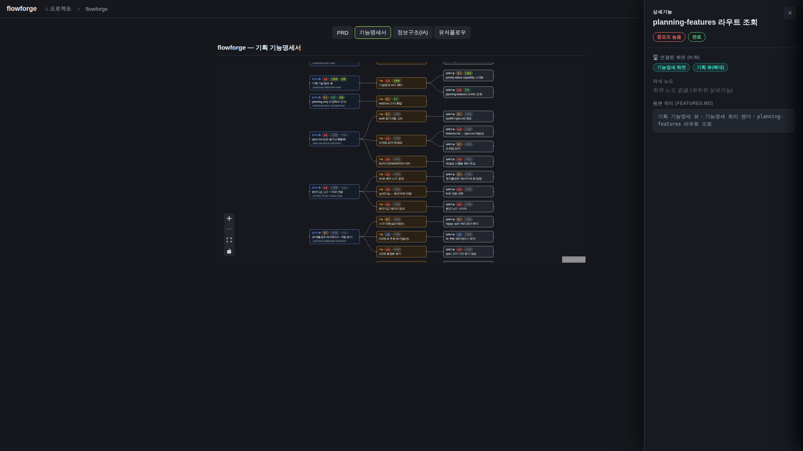
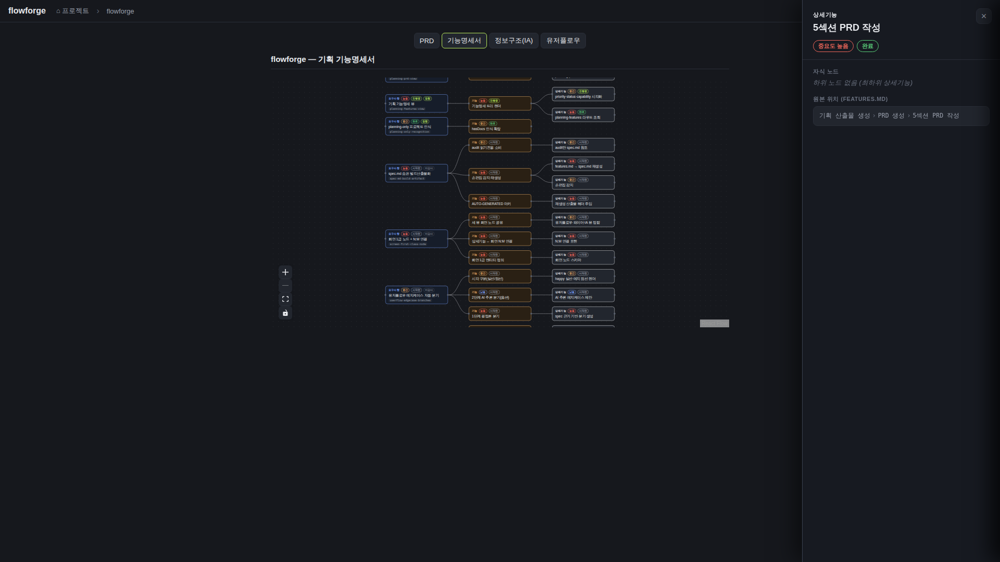
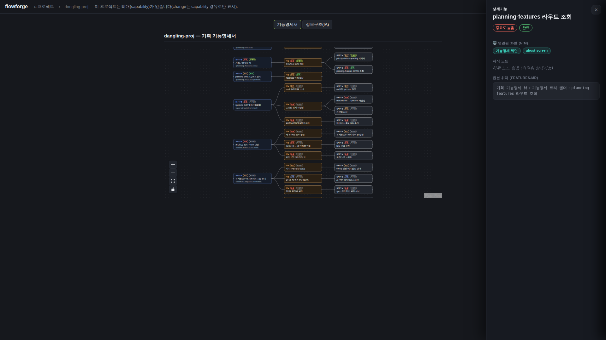
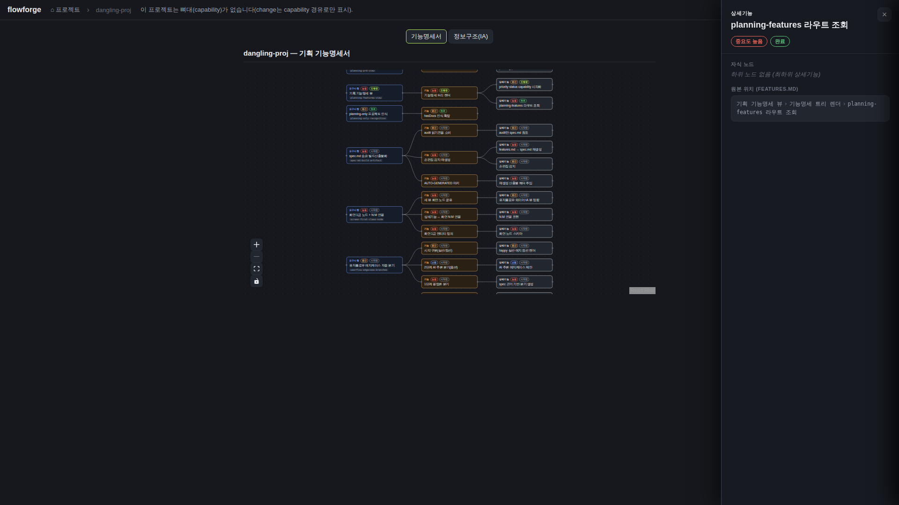

검증일: 2026-07-05T07:42:33+09:00 · 환경: server(jest 통합 + dist 실서버:8899 실데이터) · web(gstack 실픽셀, 빌드 산출물) 검증 / android(안드로이드 프로젝트 아님)·ios(macOS 필요) SKIPPED. 라이브 컨테이너(8812)는 본 change 이전 빌드라 미사용 — 동일 코드 로컬 기동으로 대체 · run: run-20260705-0742
PASS 7 · FAIL 0 · 검증 안 함 0 · SKIPPED 0
| Requirement | Scenario | Layer | 검증 수단 | 탐지 근거(basis) | 결과 | 증거 |
|---|---|---|---|---|---|---|
| screen registry를 API로 노출한다 | 화면목록·링크가 있는 프로젝트는 registry를 반환한다 | server | jest 통합테스트 '화면목록 2개 + 상세기능 링크 픽스처에서 { screens, links } 200 반환' ✓ + dist 실서버(8899) flowforge 실데이터 GET 재현 | server/ 워크스페이스 + routes/__tests__/docs.planning.test.ts (jest) | ✓ PASS | GET /api/docs/flowforge/planning-screens → 200 screens: [grid=프로젝트 카드 그리드, skeleton=기획 뷰(뼈대), features=기능명세 화면] links: [planning-prd 라우트 조회→[skeleton], planning-features 라우트 조회→[features,skeleton], priority·status·capability 시각화→[features]] jest: 26 suites / 242 tests 전부 PASS (EXIT=0) |
| screen registry를 API로 노출한다 | 화면목록 없는 프로젝트는 빈 registry 200이다 | server | jest '화면목록 섹션 없는 프로젝트는 빈 screens/links 200 (에러 아님)' ✓ + 실서버 ssoksok(화면목록 없음) 재현 | server/ 워크스페이스 + docs.planning.test.ts | ✓ PASS | GET /api/docs/ssoksok/planning-screens → 200 {"screens":[],"links":[]} |
| screen registry를 API로 노출한다 | 존재하지 않는 프로젝트·경로조작은 404다 | server | jest '존재하지 않는 프로젝트 → 404' + '경로 조작(..) 차단 → 404 (safe-4xx)' ✓ + 실서버 재현 2건 | server/ 워크스페이스 + docs.planning.test.ts | ✓ PASS | GET /api/docs/no-such-proj-xyz/planning-screens → 404 GET /api/docs/..%2Fflowforge/planning-screens → 404 |
| 상세 패널에 연결화면(N:M)을 표시한다 | 링크 있는 상세기능 클릭 시 연결화면이 나열된다 | web | gstack 실픽셀 — flowforge 실데이터에서 'planning-features 라우트 조회' 노드 클릭 → '🖥️ 연결된 화면 (N:M)' 섹션에 '기능명세 화면'·'기획 뷰(뼈대)' label 2개 표시. 콘솔 에러 0 | web/ 워크스페이스(React+Vite) — vite build 산출물 + dist 실서버 | ✓ PASS |  |
| 상세 패널에 연결화면(N:M)을 표시한다 | 링크 없는 상세기능은 섹션이 생략된다 | web | gstack 실픽셀 — 링크 없는 '5섹션 PRD 작성' 노드 클릭 → '연결된 화면' 문자열 부재(hasScreenSection=false), 빈 섹션·placeholder 없음, 다른 필드 정상 | web/ 워크스페이스(React+Vite) | ✓ PASS |  |
| 상세 패널에 연결화면(N:M)을 표시한다 | dangling 화면 id는 id 그대로 강등 표시된다 | web | gstack 실픽셀 — 픽스처(ghost-screen 미정의 id 링크)에서 노드 클릭 → 패널에 '기능명세 화면'(해석됨)과 'ghost-screen'(id 강등) 병렬 표시 | web/ 워크스페이스 + /tmp 픽스처 서버(8898) | ✓ PASS |  |
| 상세 패널에 연결화면(N:M)을 표시한다 | registry fetch 실패에도 그래프·패널은 정상 동작한다 | web | gstack — window.fetch 오버라이드로 planning-screens 요청만 reject → 그래프 51노드 정상 렌더, 패널 다른 필드(중요도·원본 위치) 정상, 연결화면 섹션만 생략(hasScreenSection=false) | web/ 워크스페이스(React+Vite) | ✓ PASS |  |
| Requirement | null | 빈값 | 잘못된타입 | 경계값 | 에러경로 | 동시성 | 대량 | 특수문자 | 판정 |
|---|---|---|---|---|---|---|---|---|---|
| screen registry를 API로 노출한다 | N/A | ✓ | N/A | ✓ | ✓ | ✓ | ✓ | ✓ | ✓ 충분 |
| 상세 패널에 연결화면(N:M)을 표시한다 | ✓ | ✓ | N/A | ✓ | ✓ | ✓ | ✓ | ✓ | ✓ 충분 |
✓=covered · N/A=해당없음(사유 hover) · ✗=missing. happy-path만이면 검증 불충분 → 최종 FAIL 차단.
| Layer | 상태 | ran | passed | failed | 근거/사유 |
|---|---|---|---|---|---|
| server | ✓ PASS | 3 | 3 | 0 | server/ 워크스페이스(Express+jest) — docs.planning.test.ts에 planning-screens describe 존재 |
| web | ✓ PASS | 4 | 4 | 0 | web/ 워크스페이스(React+Vite) — 빌드 산출물을 dist 서버로 서빙, gstack 실픽셀 |
| android | – SKIPPED | 0 | 0 | 0 | 적용 불가: Android 프로젝트 아님 |
| ios | – SKIPPED | 0 | 0 | 0 | macOS 필요 |
✓ PASS 통과
archiveGate.open = true (PASS일 때만 true). verify.json이 이 값을 archive 게이트에 전달.
{kind=link}
{kind=link}
{kind=link}
{kind=link}